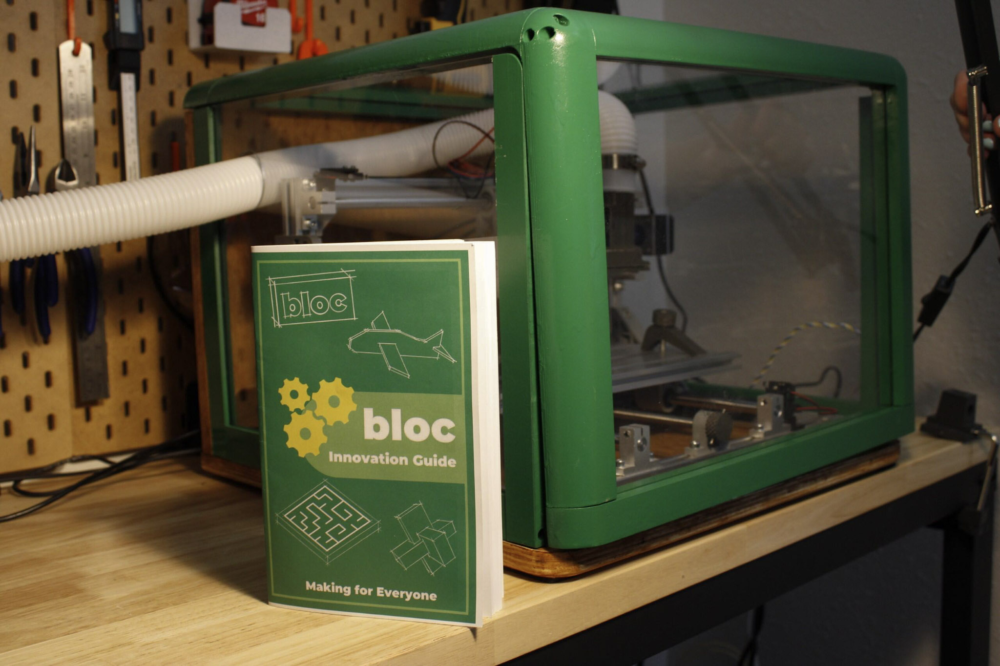
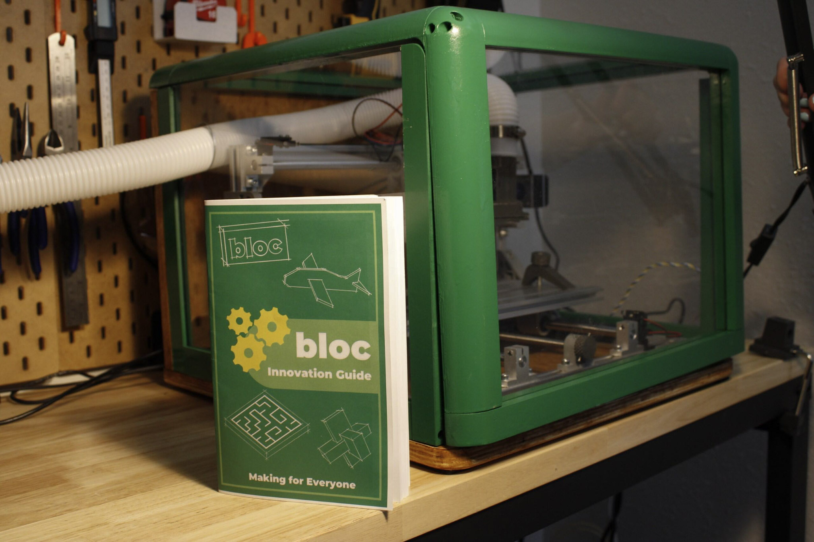
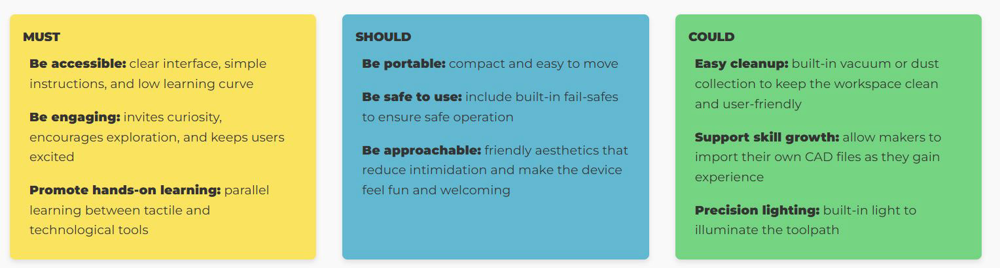
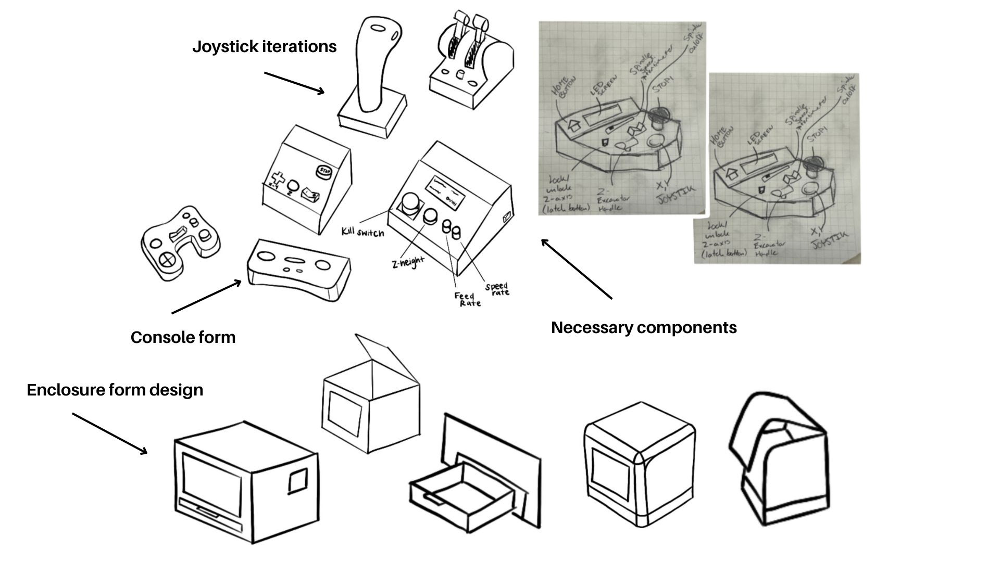
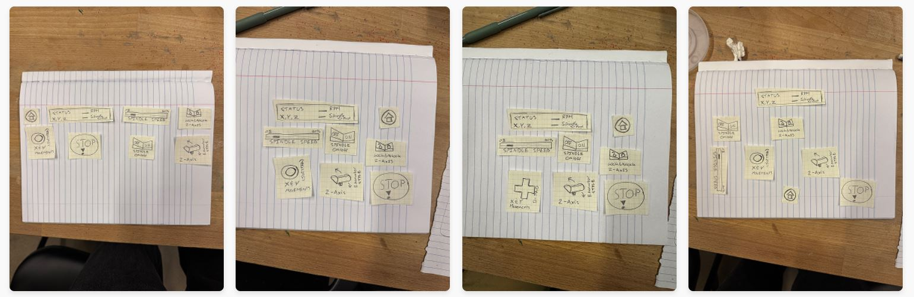
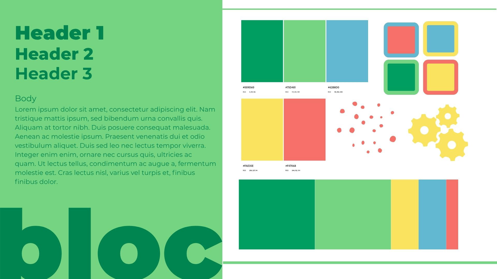
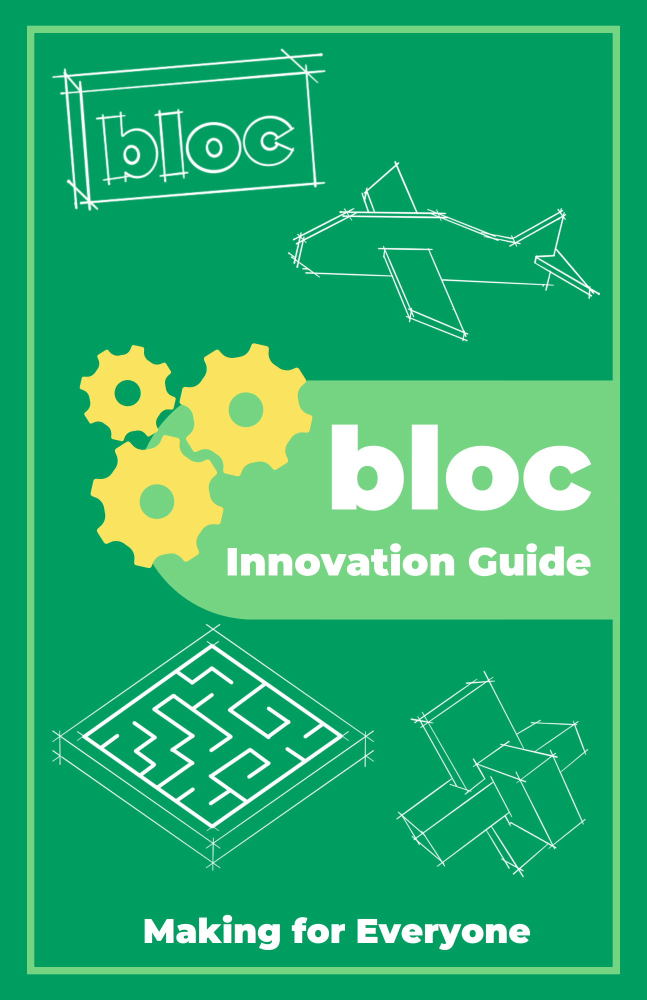
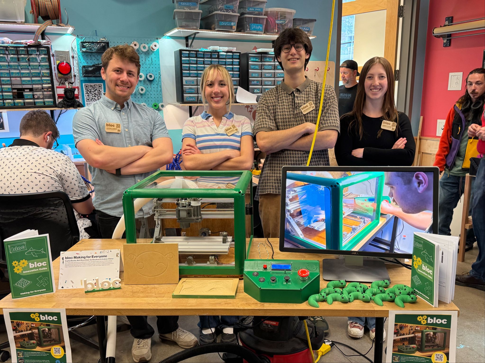

Capstone Project: bloc Making For Everyone
September 2024 – May 2025
Redesigning the CNC experience to lower the barrier to entry for beginners through intuitive interaction, built-in safety, guided onboarding, and creative empowerment.
For more details, please visit the bloc website.
See more behind-the-scenes work and moments on our Instagram.
 

Project Overview
- Team: Andrew Widner, Matt Bloomfield, Sophia Montie, Gia Boudreau – 4 person interdisciplinary team
- Role: Design Technologist – UX design, testing, instructional design, front-end dev, social media engagement
- Tools: Figma, Adobe Illustrator, SketchUp, Fusion 360, Arduino, HTML/CSS/TS
- Problem: CNC machining is inaccessible and intimidating for beginners
- Solution: Gamified CNC interface, safety enclosure, beginner-friendly learning guide
Problem
For newcomers, fabrication can feel inaccessible. Tools are often complex, the learning curve is steep, and many machines are either expensive or overly simplified specifically for younger audiences, not beginners of any age. Most tabletop CNC machines on the market lack essential safety features and clear, beginner-friendly onboarding. This creates unnecessary barriers who those who simply want to start making. Our goal was to eliminate these barriers and empower users to focus on what truly matters: bringing their ideas to life.
Target Audience
- Beginner makers of all ages
- Older children & middle schoolers (8–14)
- Parents & educators
- DIY hobbyists
Common Needs
| Accessibility | Machines are often too expensive, complicated, or intimidating for first-time users without prior technical experience. |
| Age-Inclusive Design | Most entry-level tools are either overly simplified for children or overly complex for beginners, leaving a gap for approachable, age-flexible tools. |
| Safety & Guidance | Tabletop CNCs often lack clear onboarding, safety features, and intuitive interfaces for independent learning. |
| Creative Engagement | Existing platforms prioritize structured tasks over open-ended exploration, limiting creativity and user agency. |
| Support for Self-Directed Learning | Beginners benefit from systems that encourage hands-on experimentation with supportive learning moments. |
Research Methods & Practice
Summarized Research
To ground our design in real user needs, we began with extensive qualitative research. We conducted interviews with eight experts—including makerspace educators, technical specialists, and members of our target audience. These conversations revealed critical pain points in the CNC space, from steep learning curves to safety gaps, helping us understand what beginners truly need to feel confident and capable.
Key Interview Insights
- "Develop a system for design processes: plan, double-check steps, and execute with tools."
- "CNC complexity is a barrier for beginners; low-tech tactile methods (e.g., clay, foam) ease entry."
- "Break projects into manageable steps to build foundational skills."
Precedent Research & Analysis
- Analyzed existing fabrication tools and kits with a focus on:
- Built-in safety features
- Educational scaffolding
- Accessibility and affordability
User Testing & Iteration
- Conducted iterative user testing across all stages—from initial sketches to functional prototypes.
- Evaluated key aspects of the experience:
- Machine usability
- Innovation guide clarity
- Console layout and interaction flow
- Refined our designs based on user feedback and behavioral observations at each phase.
User-Informed Visual Design
- Adapted branding and visual identity based on user input to ensure a welcoming, age-inclusive feel.
- Balanced playfulness and professionalism to avoid overly childish aesthetics while remaining approachable to beginners.
Solution
We chose to focus on the CNC machine, a powerful, industry-standard tool, that remains less accessible than more common fabrication technologies like 3D printers or laser cutters. By centering our project around CNC machining, we aimed to bridge that gap and invite more people into the world of fabrication.
We modified an existing tabletop CNC machine, designed a safety enclosure, built a gamified joystick interface, and created an innovation guide to teach learners the fundamentals of CNC machining.
Turning Insights To Design
Guided by user needs and expert input, we translated our research into tangible design priorities. The following figures illustrate how we turned insights into meaningful, testable prototypes.
Figure 1: Design Criteria
Design Process
Figure 2: Iterative sketches of the console and enclosure devices focusing on form, aesthetics, and user flow
Figure 3: User testing revealed natural interaction patterns that shaped iterations in layout, ergonomics, and usability. Console form and visual style refined to align with the enclosure, creating a cohesive and inviting experience.
Figure 4: Branding focused on a playful, approachable feel without skewing childish. Visual language aligned with the product and instructional booklet for a cohesive, welcoming experience.
Figure 5: CAD Models exploring features like a hinged lid for material access and built-in dust management. Refined into a more compact, "bloc"-like shape, emphasizing rounded, inviting edges.
Figure 6: Iterative samples of booklet pages showing refined definitions, expanded operational steps for clarity, and improved visuals and icons.
Final Outcome
The final bloc ecosystem is compact, engaging, and beginner-ready. Users operate the CNC with arcade-style joysticks and colorful buttons, navigating a simplified control scheme. The enclosure is made from sustainable materials—laser-cut wood and recycled PETG—and the instruction booklet walks users through their first project with illustrated, step-by-step guidance.
Our final design was exhibited at ATLAS Expo 2025 and used successfully by over 30 first-time users during testing—including kids, parents, and educators.
The bloc ecosystem is open source and available for community use. You can download and print the files for the enclosure, controller, innovation guide, and more! Check out the link on Printables.
The bloc Ecosystem

Innovation Guide
Click here to open PDF in a new window. Reflection
As someone with a background in more digital products, designing a physical product was a new and exciting challenge. I applied human-centered design principles to refine the interactions between our CNC machine, custom console, and an innovation guide for learners.
With more time, I would have loved to test the bloc ecosystem in real educational environments with students to better understand how it supports learning outcomes, classroom integration, and student engagement.
This project strengthened my technical communication skills, honed my ability to simplify complex workflows, and deepened my experience working across design, engineering, and fabrication teams.
Moving forward, I hope to continue exploring the intersection of design and technology. Excited to bring these skills into my next chapter in product and UI/UX design!
Figure 7: The bloc team at the Spring 2025 ATLAS EXPO, showcasing our project to the community. It was a rewarding experience to see people of all ages and experience levels engage with our CNC machine and innovation guide.
Contact
Thank you for reading about my capstone project! If you have any questions or want to connect, feel free to reach out via boudreau_gianna@yahoo.com or check out my LinkedIn profile.
See More Projects